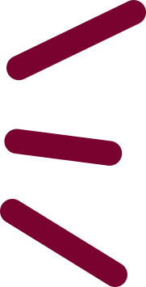
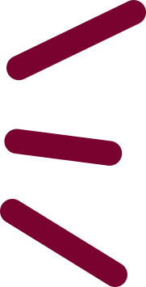

CO+OP
Automat CO+OP is a co-working space for indie game developers,
writers, teachers and anyone working on game stuff. Our goal
is to provide a space that is accessible to aspiring game
workers with low rent, cozy vibes and a supportive community.
Automat Arkad is an experimental game party, a series of
events meant to showcase and explore local indie games,
art games, alternative controllers, playful art and media,
nonsense machines and other experimental forms of playful
culture.

 
